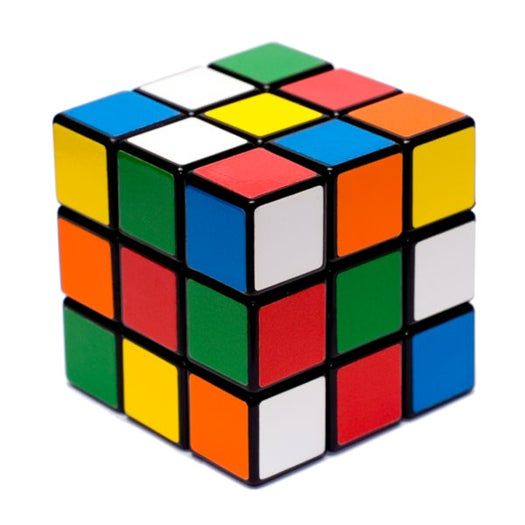
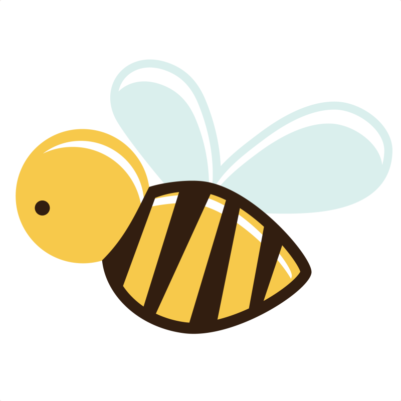

Readings
My Pet Peeves
- eating with mouth open
- unfolded clothes
- inefficiency
- taking photos with head chopped off, or too much blank space
- misspelling the word receive
- not using commas to denote pause or clause
- pens that dont write
Describe biggest worry.
Worried about taking classes that I dont like next semester. Worried the world will continue to be in lockdown for years to come.
General impressions of UML.
Uml is a nice close nit community, divided into north and south campuses forming their own strengths. Half of teachers and professors are well spoken, academically strong, and set good examples the other half are unintelligible, chaotic, and unable to convey information effectively.
How is UML handling covid?
UML has been handling the situation very effectively. Classes moved to virtual space very quickly before the massive outbreak in the USA. Residents, campuses, and work has been scaled back to the bare minimum. This also comes with some drawbacks. Loss of jobs, unequal learning experience, radical change of academic plans, and pressure for students.
What is biggest issue effecting local community?
One of the biggest issues that Lowell has been facing for quite a while now is drug abuse and addiction. Homelessness also has seen a rise. Depression has been rising due to the pandemic.
What is the biggest issue facing the world today?
The human world is now facing its once in a century virus pandemic. The problems, suffering, and enlightenment the people are experiencing now will eventually be over. Humans can change, make a difference, and all round work together. This pandemic proves it. Considering the other global issues like climate change, it's precendence has not yet been known. If humans can work together to solve this pandemic, then climate change is the next step.
Once in our lives...
Once in their lives, everyone should see how people are living in the third world countries. Once in their lives, everyone should travel across the world to a different country. Fish make a great pet.
My fastest time in solving a 3x3 Rubik's Cube is 42 seconds! 
"Bees pollinate about 90% of all the plants and trees in the world!" 
Here's an ordered list of KFC's secret herbs and spices
- Black Pepper
- White Peppper
- Ginger Powder
- Paprika
- Thyme
- Basil
- Mustard
- Oregano
- Salt
- Garlic Powder
- Sage